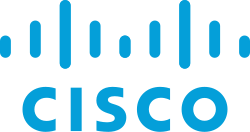

💼 العمل الحالي
دعم فني / مساعد أنظمة — IT Support & Systems Assistant
خلال فترة عملي في الشركة، طوّرت أنظمة برمجية كاملة تُستخدم يومياً من الفروع والموظفين: نظام إدارة بلاغات دعم فني، منصة توزيع برامج داخلية، وأداة معالجة وترحيل بيانات ضخمة — إلى جانب تصميم وتوثيق البنية التحتية للشبكة ومتابعة مهام الصيانة والعتاد.
- تصميم وتطوير نظام CaseDesk لإدارة ومتابعة بلاغات الدعم الفني للفروع والموظفين — بمعمارية Offline-First وقاعدتي بيانات (Hive محلياً + MySQL سحابياً عبر PHP REST APIs).
- تطوير تطبيق IT Software Center لتوزيع البرامج المعتمدة داخل شبكة الشركة مع نظام كشف تحديثات تلقائي ومدير تحميل ذكي.
- بناء أداة RatilConvert التي عالجت ونقّت +715,463 سجل عميل من نظام Retail Pro وصدّرتها بتوافق 100% مع نظام Odoo ERP — قلّلت وقت الترحيل اليدوي بنسبة 95%.
- تصميم مخطط الشبكة الفيزيائية لمبنى الشركة باستخدام draw.io، متضمناً توزيع السيرفرات، وجدار الحماية (Firewall)، والـ Core Switch، وسويتشات الأقسام، مع توثيق بنية الشبكة وربط الأجهزة وفقاً لأقسام الشركة.
- متابعة مهام الصيانة والعتاد، وتحليل مؤشرات الأداء (KPIs) عبر لوحات بيانية تفاعلية، وتوليد تقارير PDF/Excel عربية احترافية.
🕊️ المقاطعة التقنية

أنا تخصصي شبكات، ولذلك أنا مقاطع لشركة سيسكو (Cisco) بسبب دعمهم وتواطئهم الصريح مع قتلة الأنبياء، ورغم أن لدي شهادات معتمدة من Cisco إلا أنني أتخلى عنها لوجه اللَّه تعالى؛ فمن يسيء لإخواني المسلمين سأتخلى عنه ولو كان ذلك على حساب مصلحتي الشخصية، لأنهم إخواني في الإسلام ورزقي على اللَّه الغني الحميد.
هذه الشركات أنا مقاطعها، ولكن كيف أستفيد من هذا بأفضل شكل؟
عندما كنت أعمل في إحدى الشركات وكنت مساهماً في تجهيز قواعد البيانات، تجنبت تماماً تنزيل أو استخدام تقنيات أوراكل (Oracle) حتى لا أدعمهم بأي شكل. ولو أخطأت يوماً في شيء يسير فالإنسان يتعلم من خطئه، وطالما أن لي يداً أو قراراً تقنياً في أي جهة فلن أستخدم إلا الحلول التي لا تدعم من يسفك دماء إخواننا، ورزقي على اللَّه الغني الحميد.
والحمدللَّه، اليوم لكل تقنية ألف بديل حر ومستقل.. وأنت في هذه الحياة راحل عنها (فاتَّقِ اللَّه).

سيسكو | Cisco
توثيق بالأدلة والبراهين لتواطؤ شركة سيسكو وأنظمتها — تصفح الصور عبر الأسهم:

مايكروسوفت | Microsoft
موقف تاريخي لمهندسة البرمجيات ابتهال أبو السعد في وجه التواطؤ — تصفح الصورة والفيديو عبر الأسهم:
أوراكل | Oracle
توثيق دعم الشركة وتواطئها، والحرص على استبدالها ببدائل مفتوحة المصدر (مثل PostgreSQL و MariaDB):
نصيحة للمضطر: إذا كان الشخص مجبراً على شراء منتج لشركة مقاطعة ولا يوجد بديل متاح إطلاقاً، فاشتره مستعملاً حتى لا تربح الشركة منه فلساً واحداً جديداً. وشكراً، واللَّه المستعان.